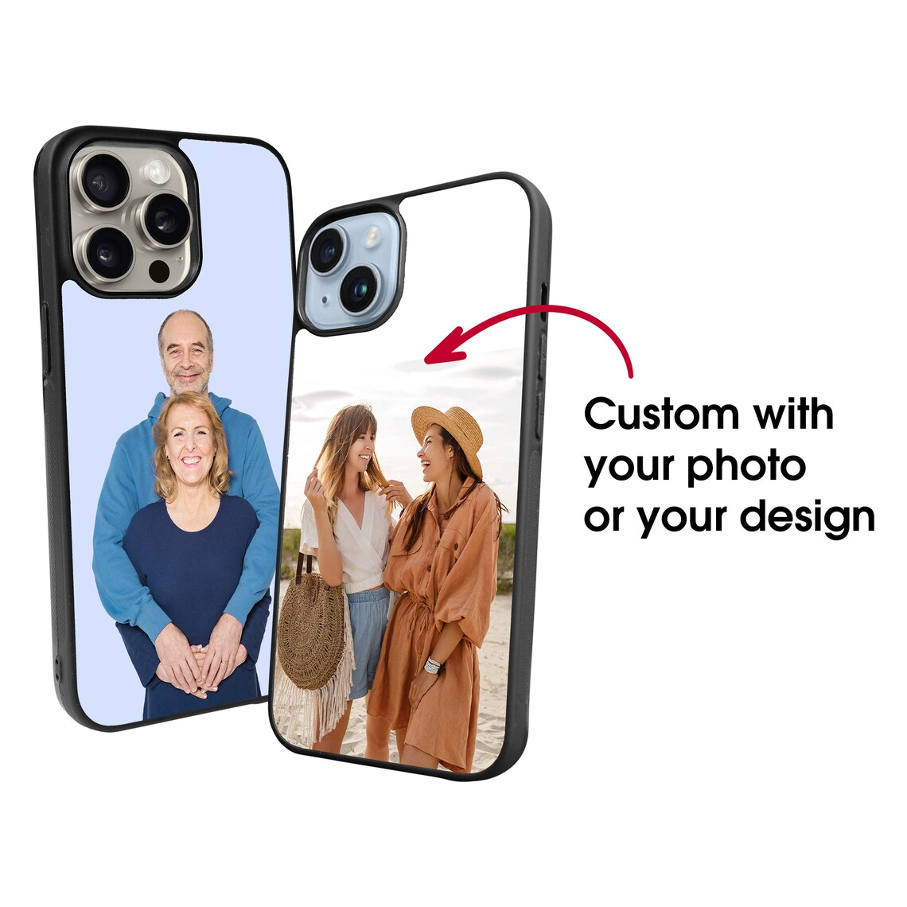

Our team was founded in 2019 after the iPhone X was released in California. Over the years, we have had over 50 new members join.
In 2019, our company wanted to build the best phone cases there are by manufacturing an idea of an invincible phone case. This case didn't sell well at first because of competition from Otterbox, another phone case brand. This caused our case not to do as well, and our business lost value. Because of this, we decided to add customizability to our cases, which Otterbox could not compete with. As a result, we were able to save our business and recover from our losses.
We understood that phone cases must be unique and creative to sell well. Our team had an idea to make a phone case that changes color at the start. That phone case made our business skyrocket, and after that, we wanted our cases to have the same unique effect and creativity that represent people, but make them even more personal. We used all the information we had to create a phone case that offers more personalized customization. This phone case uses an NFC tag on the back of your phone to make the back display an image of your choice. This feature is seamless and very personal. It’s like magic. Our phone cases have now made us millions, and they have been the 4-year in a row award-winning phone case from CNET. We can’t wait to make brighter versions that last longer and offer more protection. We look forward to delivering these custom phone cases to you.
We differentiate ourselves from other companies by letting the workers choose how the company functions. Instead of having a direct CEO, we listen to our workers’ suggestions and customers' reviews to then apply the advice to our business. Our leaders value creativity and innovation, and are knowledgeable enough to help workers with potential problems and difficulties they have. They also personally teach new workers introduced to the company.
SWOT Analysis Strengths Because there are only 50 people in our company, we have great teamwork when faced with problems. This allows our company to be more efficient and productive. WeaknessesHaving 50 people in our company is also a weakness because we cannot produce as many products as other companies with factories in other places. Because of this, we have a more limited stock compared to other companies.
Opportunities We can leverage our location since our company is based in Silicon Valley. Being in a wealthy area enables us to sell more phone cases because more people own phones. Additionally, with more tech stores nearby, we can draw inspiration and gather materials from the surrounding area. Threats A major threat to our company is competition from other companies. This is because we are a relatively new start-up company, and are less well-known than other companies like Otterbox. This means that they get more sales, which directly affects us by reducing the market.